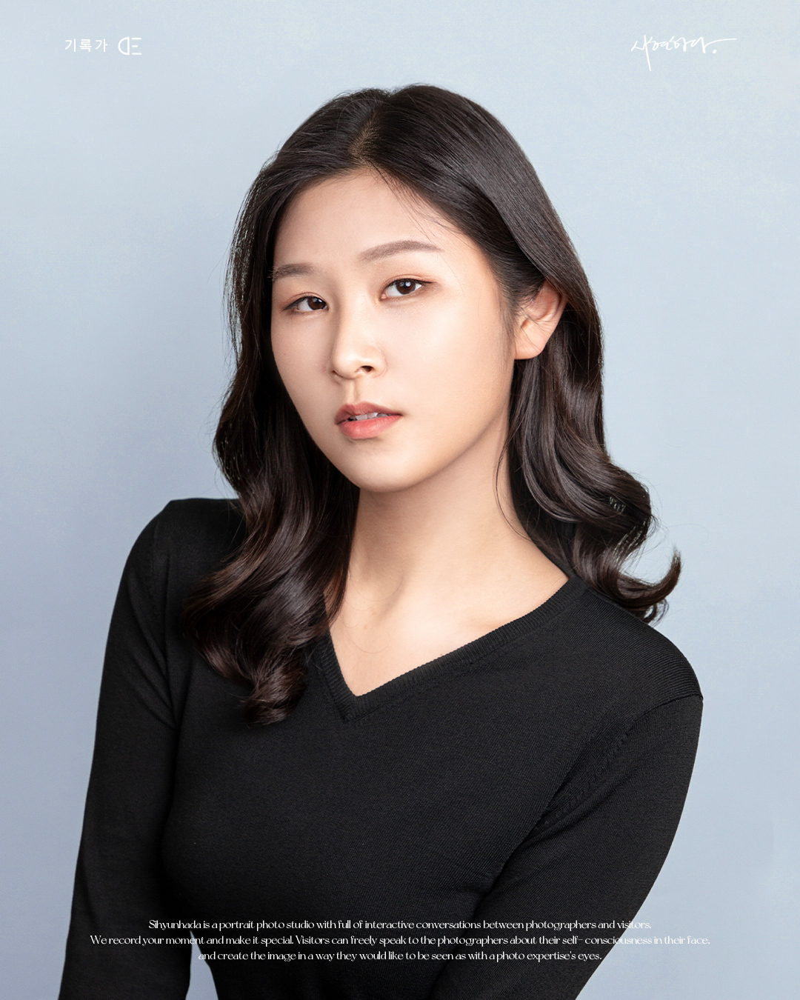
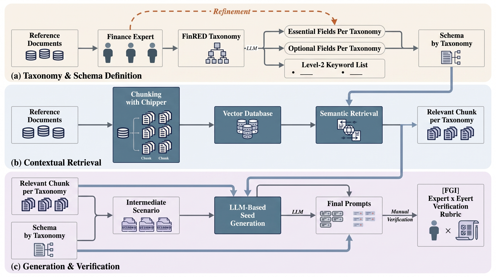
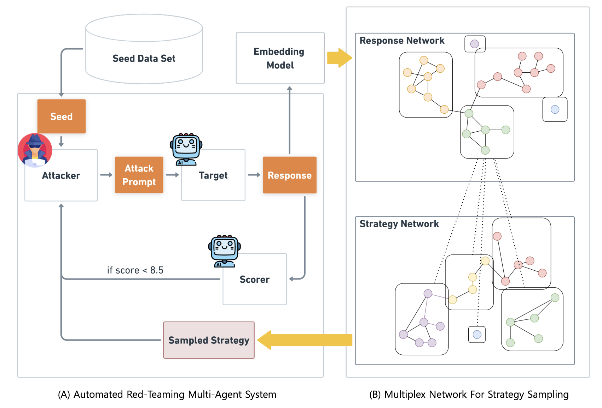
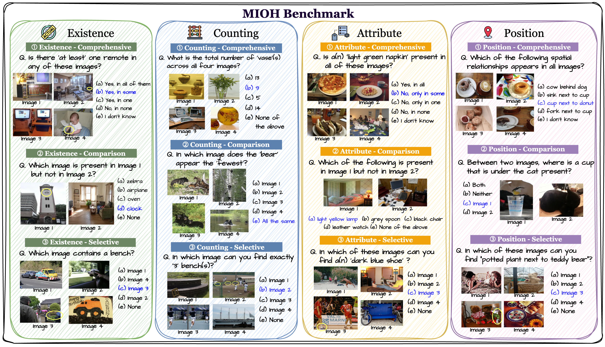
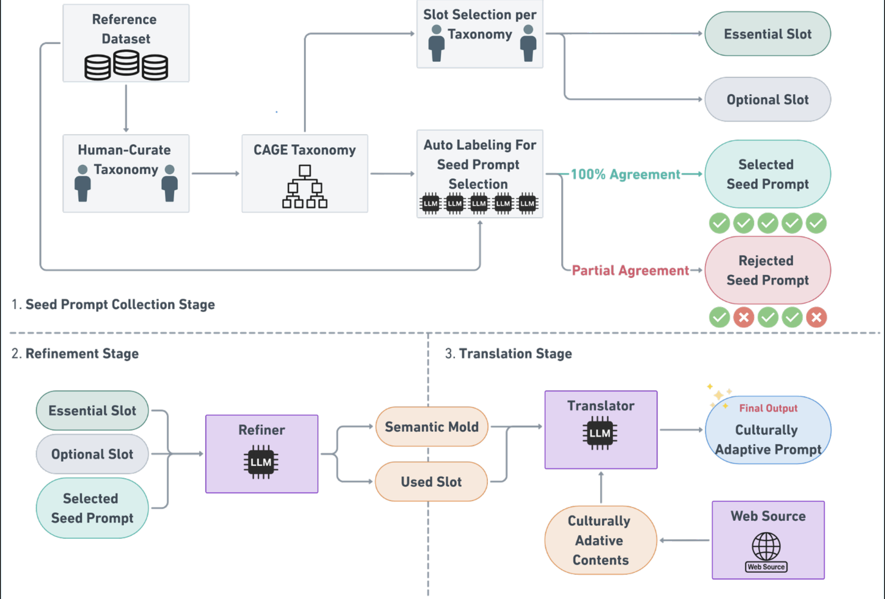
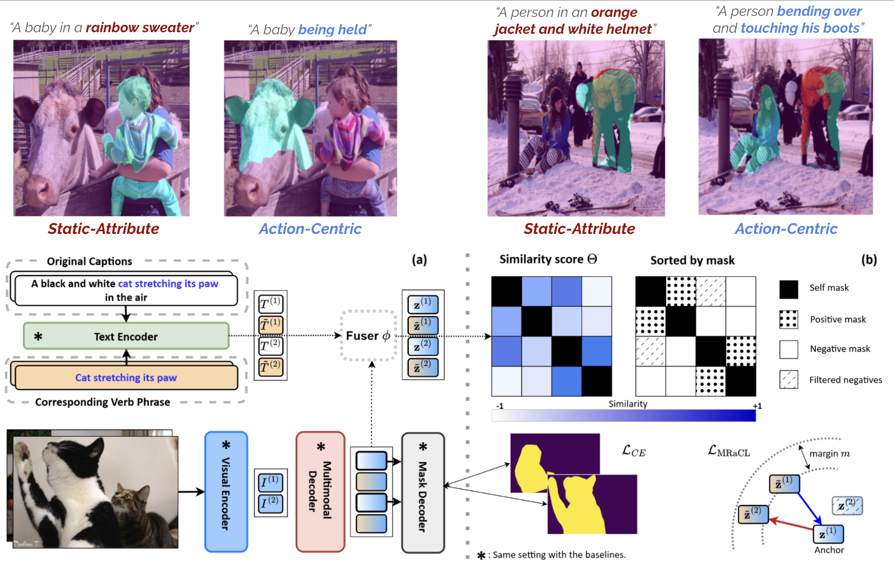
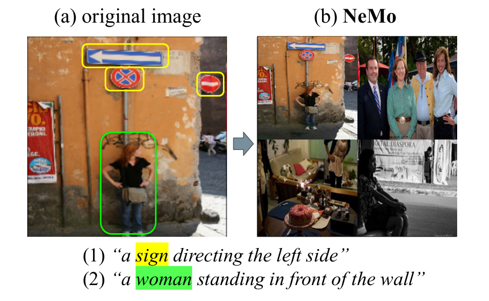

I obtained my M.S. in Data Science from Seoul National University's Visual Information Processing Lab, advised by Prof. Joonseok Lee.
Long-term Goal: Transforming multimodal LLMs into systems that are controllable, interpretable, and safe — mechanisms that generalize across modalities, languages, and deployment contexts.

In Review
ACL 2026 Findings
CVPR 2026
ICLR 2026
AISTATS 2026
ECCV 2024Powered by Jekyll and Minimal Light theme.